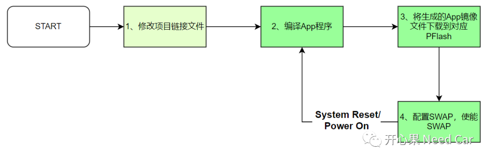
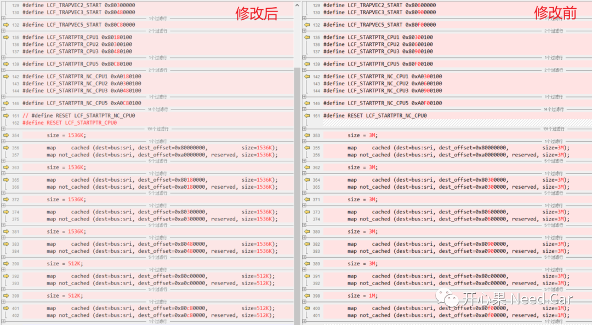
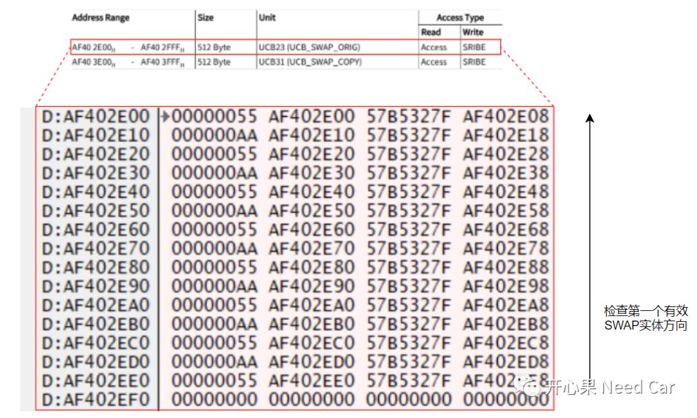
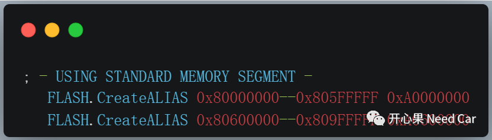
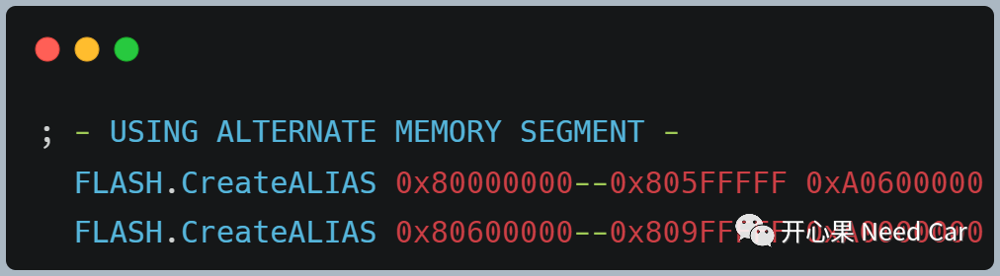
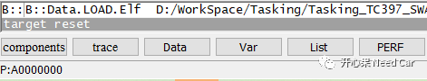
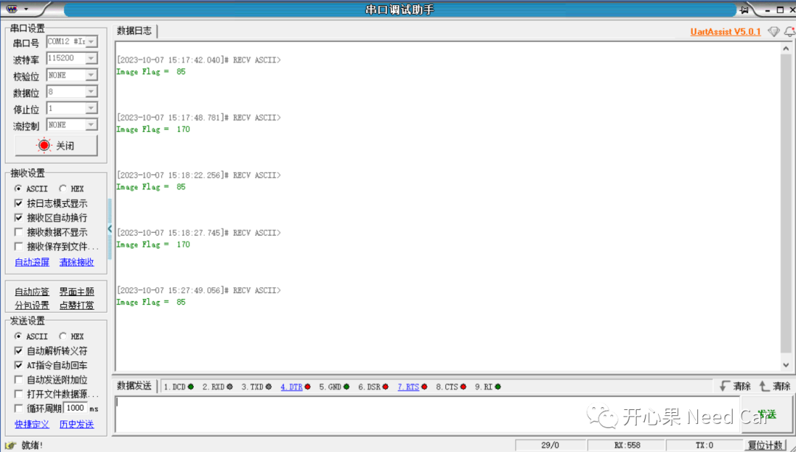
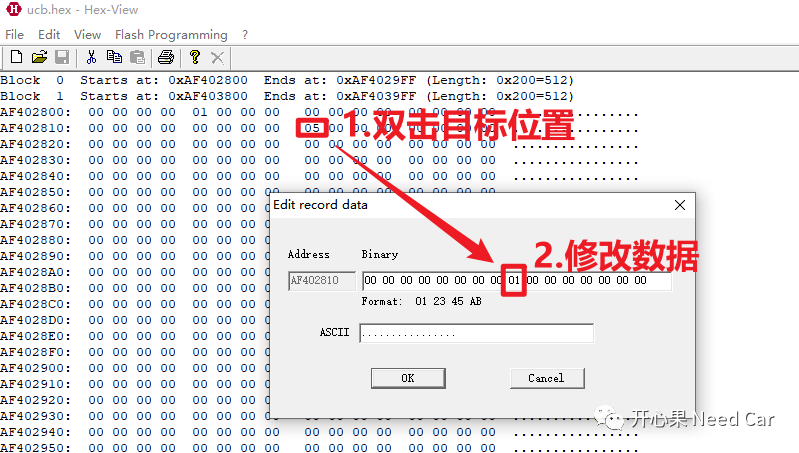

开心果 Need Car · 2023-10-20T07:03:00+08:00 · 微信原文
提示：本文基于Tasking+TC397讨论
1、SWAP实现的基本流程
基于Aurix的SOTA（Software over the Air）功能实现，主要实现如下4个步骤，如下所示：


编译APP程序
此步骤，相对容易理解，开发人员按照需求完成应用软件开发，生成需要下载的镜像文件（Image）。
下载镜像文件
将编译后的Image文件下载到PFlash，假设当前A Group Banks处于激活（Active）状态，只能将程序下载到非激活状态（Inactive）的B Group Banks，反之，亦然。
使能SWAP
当Image下载完成以后，设置需要激活的A/B Group Banks，之后使能SWAP功能。当程序进行System Reset或者Power On以后，启动固件时，会根据UCB中配置，对有效的A或者B Group Banks进行对应使能。
其中，0x55表示standard address，也就是A Group Banks有效，此时A Group Banks物理内存会映射到0xA0000000开始的虚拟地址处；0xAA表示alternate address，也就是B Group Banks有效，此时B Group Banks物理内存会映射到0xA0600000开始的虚拟地址处。
通过操作UCB23和UCB31，交替设置A/B Group Banks使能，如下所示：

2、使用Lauterbach烧录Image


如上*.cmm文件中，使用了Lauterbach的脚本命令FLASH.CreateALIAS，具体格式（Format）如下：
FLASH.CreateALIAS <address_range> <alias_address>FLASH.CreateALIAS 0x80000000--0x805FFFFF 0xA0600000
3、验证程序所在Group Banks
本文在编译Image A和Image B时，对Image_Flag变量设置了不同值，一个0x55，一个0xAA，A/B Group Banks交替切换示意如下所示：

在进行SOTA功能开发过程中，少不了的UCB的配置。有些时候，为了方便，会单独将UCB对应的*.hex文件独立出来烧录。为了加速UCB 对应*.hex文件的修改，且熟悉修改位置时，使用HexView修改相对来说可能更快捷，而且，使用HexView修改某个字节，对应行的Checksum自动计算完成，确保修改的*.hex文件有效。具体操作如下所示：

往期精彩回顾
UDS：Security Access service (0x27)，值得深聊